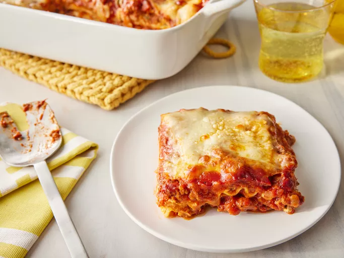

Lasagna

Worlds Best Lasagna
Description
When John Chandler submitted this lasagna recipe to Allrecipes more than 20 years ago, he had no idea how successful it would become. One of our top-performing recipes of all time, World's Best Lasagna racks up more than 7 million views per year and has ranked among the most popular lasagna recipes on the internet for two decades. Unfortunately, John unexpectedly passed away at 53 years old — read all about his life and legacy here.
Make our most popular lasagna today to find out what all the fuss is about!
Ingredients
- 1 pound sweet Italian sausage
- ¾ pound lean ground beef
- ½ cup minced onion
- 2 (6 ounce) cans tomato paste
- 16 ounces ricotta cheese
- And like 16 other ingredients
Steps
- Gather all 74 of your ingredients.
- Cook sausage, ground beef, onion, and garlic in a Dutch oven over medium heat until well browned.
- Stir in crushed tomatoes, tomato sauce, tomato paste, and water. Season with sugar, 2 tablespoons parsley, basil, 1 teaspoon salt, Italian seasoning, fennel seeds, and pepper. Simmer, covered, for about 1 ½ hours, stirring occasionally.
- Bring a large pot of lightly salted water to a boil. Cook lasagna noodles in boiling water for 8 to 10 minutes. Drain noodles, and rinse with cold water.
- Place patties on the preheated grill. Cover and cook 6 to 8 minutes per side, or to desired doneness. An instant-read thermometer inserted into the center should read at least 160 degrees F (70 degrees C).
- Now do steps 80 through 9,000